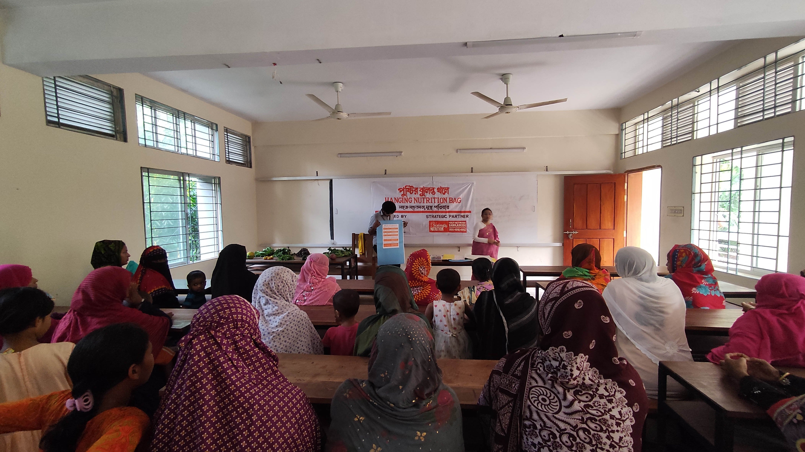

Our Legacy of Careযত্নের ঐতিহ্য
Nourishing the Next Generation of Leaders.
Born from the soil of Bagerhat, we are a youth-powered engine driving nutritional sovereignty in rural Bangladesh.
Born from the soil of Bagerhat, we are a youth-powered engine driving nutritional sovereignty in rural Bangladesh.
Established in 2025, the Priti Nourishment Foundation (PNF) emerged as a response to the quiet crisis of malnutrition among the youth of Bagerhat. We realized that information, when packaged with dignity and innovation, has the power to transform lives. ২০২৫ সালে প্রতিষ্ঠিত, প্রীতি নারিশমেন্ট ফাউন্ডেশন (পিএনএফ) বাগেরহাটের তরুণদের মধ্যে অপুষ্টির নীরব সংকটের প্রতিক্রিয়া হিসাবে আবির্ভূত হয়েছিল। আমরা বুঝতে পেরেছি যে সঠিক তথ্য, যখন মর্যাদা এবং উদ্ভাবনের সাথে পরিবেশিত হয়, তখন জীবন পরিবর্তন করার ক্ষমতা রাখে।
Our "Hanging Nutrition Bag" wasn't just a tool; it was a symbol of youth stepping up to lead where traditional systems had limitations. Today, we are a vibrant network of students, activists, and health professionals dedicated to a healthier Bangladesh. আমাদের "হ্যাংগিং নিউট্রিশন ব্যাগ" শুধু একটি উপকরণ ছিল না; এটি ছিল এমন একটি প্রতীক যেখানে ঐতিহ্যবাহী ব্যবস্থা সীমিত ছিল সেখানে তরুণদের নেতৃত্ব দেওয়ার। আজ আমরা এক সুস্থ বাংলাদেশের জন্য নিবেদিত শিক্ষার্থী, কর্মী এবং স্বাস্থ্য পেশাজীবীদের একটি সক্রিয় নেটওয়ার্ক।
To empower communities through practical nutrition education and youth-led action.ব্যবহারিক পুষ্টি শিক্ষা ও তরুণদের নেতৃত্বে কাজের মাধ্যমে সমাজের ক্ষমতায়ন।
To build a globally connected network of young leaders advancing nutrition awareness.পুষ্টি সচেতনতা বৃদ্ধিতে কাজ করা তরুণ নেতাদের একটি বিশ্বব্যাপী নেটওয়ার্ক তৈরি করা।

Lives Impacted Monthlyপ্রতি মাসে প্রভাবিত জীবন
Founder & EDপ্রতিষ্ঠাতা ও নির্বাহী পরিচালক
The visionary spirit driving PNF's innovative approach to rural health. গ্রামীণ স্বাস্থ্যের ক্ষেত্রে পিএনএফ-এর উদ্ভাবনী পদ্ধতিকে চালিত করার মূল শক্তি।
Programs Managerপ্রোগ্রাম ম্যানেজার
Strategist behind the successful launch of our flagship campaigns. আমাদের প্রধান ক্যাম্পেইনগুলোর সফল সূচনার পেছনের রূপকার।
Health Education Leadস্বাস্থ্য শিক্ষা লিড
Bridging the gap between scientific health data and rural families. বিজ্ঞানের স্বাস্থ্য সংক্রান্ত তথ্য আর গ্রামীণ পরিবারের মধ্যে সেতুবন্ধন স্থাপন করা।
Launched in Bagerhat Sadar with the "Hanging Nutrition Bag" project. Received immediate support from Global Alliance for Improved Nutrition (GAIN). "হ্যাংগিং নিউট্রিশন ব্যাগ" প্রজেক্ট নিয়ে বাগেরহাট সদরে যাত্রা শুরু। 'গ্লোবাল অ্যালায়েন্স ফর ইমপ্রুভড নিউট্রিশন (GAIN)' থেকে তাৎক্ষণিক সমর্থন পেয়েছি।
Reached over 25 vulnerable families and trained 1,000+ adolescent girls in 5 districts. Formalized partnership with SUN Youth Network. ২৫টিরও বেশি দরিদ্র পরিবারের কাছে সহায়তা পৌঁছানো এবং ৫টি জেলায় ১,০০০ জনেরও বেশি কিশোরীকে প্রশিক্ষণ দেওয়া। SUN ইয়ুথ নেটওয়ার্কের সাথে অংশীদারিত্ব।